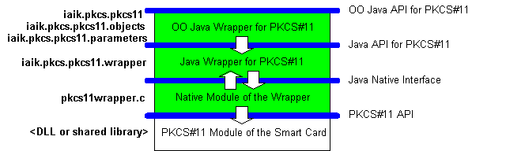

Introduction
This is a library to access PKCS#11 modules from the Java programming language.
It uses the Java Native Interface to access the PKCS#11 modules of smart cards
or other hardware security modules (HSM). People at IBM had the idea of
implementing such a wrapper much earlier. Their wrapper also works very well,
but one cannot use their implementation for commercial purposes or redistribute
it for any other purpose.
Please notice that this library does not come with a
JCA or JCE provider implementation. For this purpose there is a different
product - the IAIK PKCS#11 Provider.
The Layer Model of the System
Figure 1 shows the layer model of this
library. This library consists of the Object Oriented (OO) Java Wrapper API for
PKCS#11, the (non-Object Oriented) Java Wrapper API for PKCS#11 and the Native
Module of the Wrapper, the green layers in the figure. The following paragraphs
describe these parts. The lowest layer, the PKCS#11 Module of the Smart Card, is
the PKCS#11 module that the smart card manufacturer supplies. This is normally a
DLL or shared library. As the arrows show, the uppermost layer depends on the
Java Wrapper for PKCS#11, but not vice versa. This means you can use the Java
Wrapper for PKCS#11 directly and build your application upon it without using
the OO layer. This can be useful to create smaller applications, because you do
not need most of the classes of the package iaik.pkcs.pkcs11 and no class from
iaik.pkcs.pkcs11.objects and iaik.pkcs.pkcs11.parameters. The only classes from
iaik.pkcs.pkcs11 you need are the exception classes.

Figure
1
The Object-Oriented Java API for PKCS#11
This object-oriented Java API resides in the packages iaik.pkcs.pkcs11,
iaik.pkcs.pkcs11.objects and iaik.pkcs.pkcs11.parameters. It provides a straight
forward mapping of the PKCS#11 v2.20 standard to a set of classes and
interfaces. The package iaik.pkcs.pkcs11.objects is a model of the object
hierarchy presented in this PKCS#11 standard. The package
iaik.pkcs.pkcs11.parameters provides classes for objects that act as parameters
for mechanisms which require specific arguments. This layer solely builds upon
the Java API for PKCS#11 as implemented by the Java Wrapper for PKCS#11.
The Java API for PKCS#11
The non-Object Oriented Java Wrapper API for PKCS#11 is a set of Java classes
and interfaces that reflects the PKCS#11 API. It is a straightforward
realization of the data structures as defined in PKCS#11. For each structure in
the pkcs11t.h header file of PKCS#11, there is a corresponding class in the
package iaik.pkcs.pkcs11.wrapper. Notice, that this is not an object oriented
approach at this level; it is just a straightforward mapping of the data
structures to Java. All adoptions to the PKCS#11 API, including wrapping into an
object oriented approach, appear in the Object Oriented Java Wrapper API for
PKCS#11. The interface PKCS11 in the iaik.pkcs.pkcs11.wrapper package is the
interface to a PKCS#11 module and provides access to the functions defined by
PKCS#11. All names of classes, data structures and methods are the same as the
corresponding PKCS#11 counterpart. The PKCS11Connector instantiates an object
that implements this PKCS11 interface. The returned object gives access to the
PKCS#11 module of the smart card; it is the Java-Counterpart to the
CK_C_GetFunctionList returned by the C_GetFunctionList function in PKCS#11. The
Module class in the object-oriented layer provides the respective functionality.
Have a look at the demo.pkcs.pkcs11 package in the demo directory for sample
programs.
The Native Module of the Wrapper
This native module of the wrapper is responsible for translation of the Java
data structures, which the Java API for PKCS#11 part defines, to native PKCS#11
data structures and vice versa. This module of the system does not include any
additional logic, it only provides a straightforward mapping from the Java API
for PKCS#11 to the PKCS#11 Module of the Smart Card. This layer is necessary,
because the JNI requires the native functions to have a special signature that
is defined by JNI itself. PKCS#11 and JNI are not compatible as they are, and
this is the reason why this layer is necessary at all. In compiled form, this
module is a native DLL or shared library.
Compatibility
This implementation should be compatible to JDK 1.3 and higher and JNI
1.1. It relies on the PKCS#11 version 2.20 but it should also work with any 2.x driver.
The native code is written in C and can be compiled on different Windows and Unix
platforms.
Performance
Tests showed that the calls through the Java Native Interface (JNI) and the
parameter conversions do not take much time. We did a short test on an AMD
Athlon 1.4 GHz using SUN JDK 1.3.1_04. It showed that an update call to a digest
through the wrapper, providing a 1024 bytes block of data, takes not even 0.01
milliseconds on average. This time includes the Java call in the PKCS#11
Wrapper, in the native code of the wrapper (including conversion of parameters
from Java to PKCS#11 structures) and down to the call to the PKCS#11 module.
This excludes the time for the calculation time in the PKCS#11 module. We tested
this by using a dummy PKCS#11 module that does nothing in its digest functions.
The core code from the testing routine looks like this:
long t0 = System.currentTimeMillis();
for (int i = 0; i < 10000; i++) {
session.digestUpdate(dataBuffer);
}
long t1 = System.currentTimeMillis();
We took a time difference of about 90 milliseconds between t1 and t0, which
results in 0.009 milliseconds per call. This value is roughly the same for a
data buffer of 1024 bytes and 4096 bytes.
Sending a file with 4.372.615 bytes to the PKCS#11 module took about 70
milliseconds sending the data in 1024 byte blocks; this results in 4271 calls to
the update method. Increasing the block size to 4096 bytes improves the
performance significantly. The test with the file includes reading the data
directly from file and feeding it to the PKCS#11 Wrapper on the fly. However, we
read the complete file once, before we did the test run, what causes the
operating system the have the file cached in memory for the real test run. Then
sending the same amount of data takes 30 milliseconds; this results in 1068
calls to the update method.
During the performance tests it showed out that it is even worth to calculate
relatively simple cryptographic operations likes hashes through a PKCS#11
module. For example, we compared a pure Java implementation and C implementation
of the SHA- 1 hashing algorithm. Both use very similar code; i.e. the
compression function is nearly a copy and paste from Java to C. However, the C
implementation, accessed through the PKCS#11 Wrapper, is about double as fast as
the Java implementation (using the same environment as before).
These tests unquestionably prove that this library is suitable for high
performance server applications.
License
We provide this software under an Apache style license. The complete license text is as follows.
Copyright (c) 2002 Graz University of Technology. All rights reserved.
Redistribution and use in source and binary forms, with or without modification, are permitted provided that the following conditions are met:
- Redistributions of source code must retain the above copyright notice, this list of conditions and the following disclaimer.
- Redistributions in binary form must reproduce the above copyright notice, this list of conditions and the following disclaimer in the documentation and/or other materials provided with the distribution.
- The end-user documentation included with the redistribution, if any, must include the following acknowledgment:
"This product includes software developed by IAIK of Graz University of Technology."
Alternately, this acknowledgment may appear in the software itself, if and wherever such third-party acknowledgments normally appear.
- The names "Graz University of Technology" and "IAIK of Graz University of Technology" must not be used to endorse or promote products derived from this software without prior written permission.
- Products derived from this software may not be called "IAIK PKCS Wrapper", nor may "IAIK" appear in their name, without prior written permission of Graz University of Technology.
THIS SOFTWARE IS PROVIDED "AS IS" AND ANY EXPRESSED OR IMPLIED WARRANTIES, INCLUDING, BUT NOT LIMITED TO, THE IMPLIED WARRANTIES OF MERCHANTABILITY AND FITNESS FOR A PARTICULAR PURPOSE ARE DISCLAIMED. IN NO EVENT SHALL THE LICENSOR BE LIABLE FOR ANY DIRECT, INDIRECT, INCIDENTAL, SPECIAL, EXEMPLARY, OR CONSEQUENTIAL DAMAGES (INCLUDING, BUT NOT LIMITED TO, PROCUREMENT OF SUBSTITUTE GOODS OR SERVICES; LOSS OF USE, DATA, OR PROFITS; OR BUSINESS INTERRUPTION) HOWEVER CAUSED AND ON ANY THEORY OF LIABILITY, WHETHER IN CONTRACT, STRICT LIABILITY, OR TORT (INCLUDING NEGLIGENCE OR OTHERWISE) ARISING IN ANY WAY OUT OF THE USE OF THIS SOFTWARE, EVEN IF ADVISED OF THE POSSIBILITY OF SUCH DAMAGE.
References
-
PKCS#11, Version 2.20, by RSA Laboratories
-
Java SE Platform, by Oracle
-
Java Native Interface 1.1, by Oracle
-
PKCS#11 API for Java, by IBM Alphaworks